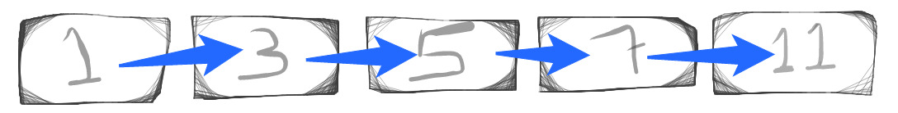
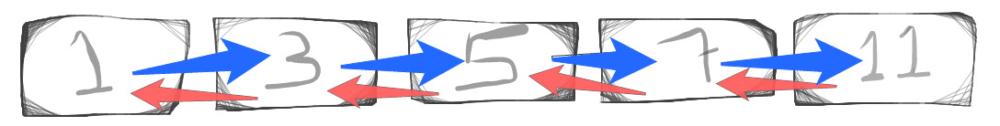
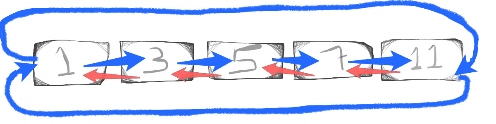

O que é?
É uma coleção linear de elementos de dados, na qual a ordem linear não é dada pela sua alocação física na memória.
Definições
-
Singly LinkedListlista implementada onde cada item tem um link (vínculo) para o próximo, desta forma possibilita percorrer os elementos de forma unidirecional. -
Doubly LinkedListé uma variação deLinkedListonde cada item tem um link (vínculo) para o anterior e o próximo, sendo assim bidirecional.
Conceito
LinkedList serve como base para implementação de outras abstrações de tipo de dados como List, Dictionary, Queue e Stack, isso tudo mesmo, uma implementação por baixo dos panos de LinkedList.
O grande benefício do LinkedList é que os itens podem ser adicionados ou removidos sem que haja a necessidade de realocação ou reorganização de disco, uma vez que cada item ocupa um espaço de memória.
Testes nos algoritmos
Em ambos algoritmos na primeira exibição da lista contém os valores iniciais [1, 3, 5, 7, 11], na segunda exibição ocorre a exclusão dos itens 1 e 5.
Singly LinkedList

from random import randint
class Node(object):
def __init__(self, value, next_node = None):
self.value = value
self.next = next_node
def to_output(self):
return "{:0>2}->{:0>2}".format(self.value, self.next.value if not self.next is None else 0)
class SinglyLinkedList(object):
head = None
tail = None
def add(self, value):
node = Node(value, None)
if self.head is None:
self.head = self.tail = node
else:
self.tail.next = node
self.tail = node
return node
def remove(self, value):
current = self.head
previous = None
while current is not None:
if current.value == value:
if previous is not None:
previous.next = previous.next
else:
self.head = current.next
previous = current
current = current.next
def list(self):
current = self.head
while current is not None:
print(current.to_output())
current = current.next
my_list = SinglyLinkedList()
my_list.add(1)
my_list.add(3)
my_list.add(5)
my_list.add(7)
my_list.add(11)
my_list.list()
print("Removing...")
my_list.remove(5)
my_list.remove(1)
my_list.list()
- Output
01->13
03->15
05->17
07->11
11->10
Removing...
03->15
05->17
07->11
11->10
Formato: Atual->Próximo
Durante a inserção na lista ocorre o vínculo entre o nó atual e o anterior, a propriedade next do nó anterior recebe como atribuição o nó atual.
As propriedades head e tail definem o começo e o fim da lista, sendo assim podemos percorrer em ambos sentidos.
Doubly LinkedList

from random import randint
class Node(object):
def __init__(self, value, prev_node = None, next_node = None):
self.value = value
self.prev = prev_node
self.next = next_node
def to_output(self):
return "{:0>2}<-{:0>2}->{:0>2}".format(self.prev.value if not self.prev is None else 0,
self.value,
self.next.value if not self.next is None else 0
)
class DoublyLinkedList(object):
head = None
tail = None
def add(self, value):
node = Node(value, None)
if self.head is None:
self.head = self.tail = node
else:
node.prev = self.tail
node.next = None
self.tail.next = node
self.tail = node
return node
def remove(self, value):
current = self.head
while current is not None:
if current.value == value:
if current.prev is not None:
current.prev.next = current.next
current.next.prev = current.prev
else:
self.head = current.next
current.next.prev = None
current = current.next
def list(self):
current = self.head
while current is not None:
print(current.to_output())
current = current.next
my_list = DoublyLinkedList()
my_list.add(1)
my_list.add(3)
my_list.add(5)
my_list.add(7)
my_list.add(11)
my_list.list()
print("Removing...")
my_list.remove(5)
my_list.remove(1)
my_list.list()
Seguindo o mesmo conceito do Sinlgy LinkedList durante a inserção na lista também ocorre o vínculo entre o nó atual e o anterior, carregando a propriedade next do nó anterior e a propriedade prev do nó atual recebe o nó anterior.
- Output
00<-01->03
01<-03->05
03<-05->07
05<-07->11
07<-11->00
Removing...
00<-03->07
03<-07->11
07<-11->00
Formato: Anterior<-Atual->Próximo
Variações
Circular LinkedList

É uma variação da Doubly Linked List nesta implementação o próximo elemento do último nó o tail, é uma referência para topo o head e o elemento anterior do topo é uma referência para último. Criando um vínculo entre inicio e fim, sendo assim a lista nunca tem um fim.
Vantagens
- Estrutura de dados dinâmica que cresce alocando e desalocando memória em tempo de execução, não é necessário definir um tamanho inicial;
- Inserção e exclusão são facilmente implementadas, facilitando as operações em qualquer posição da lista;
- Facilitam a implementação de pilhas e filas;
- É possível aplicar o Backtracking na lista bidirecional;
Desvantagens
- Usam mais memória do que arrays, devido ao armazenamento dos seus ponteiros;
- Os nós devem ser lidos em ordem desde o início, pois são inerentemente ao acesso sequencial;
- Aumento consideravelmente do tempo necessário para acesso aos elementos individuais, especialmente com um cache da CPU, porque os nós são armazenados de forma inconsequentemente;
Conclusão
Conforme foi visto o LinkedList é um algoritmo aplicado em diversas estruturas de tipo de dados que nós utilizamos e muito. O vínculo entre os nós só é possível, pois ocorre o armazenamento da referência e não o valor. Assim ficamos com a ...
dos algoritmos.